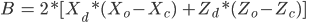

Ray Tracer
Dalya Gershtein
20341368
CS488
July 24th, 2012
1 Purpose
Extend the functionality of the Ray Tracer from Assignment 4 to create highly photo-realistic images.
1.1 Topics
- Raytracer improvements in speed and quality
- Additional primitives for modeling enhancement. Primitives are much faster to render, since determining the point of intersection is significantly simpler than meshes.
- Advanced lighting effects. Point lights only create hard shadows. To achieve a more realistic soft shadow effect, use spherical area lights with a user defined radius to capture the realistic umbra and penumbra of an object's shadow.
- Additional material options, including UV mapping for meshes and primitives. In order for primitives to have a more realistic looking material, source images can be mapped as textures to spheres, cubes and meshes.
1.2 Statement
I chose to create a Ray Tracer for my final project because I hope to one day have a career in 3D Computer Graphics or Computer Animation. For several years now I have been creating 3D models in Maya and using Mental Ray to ray trace the scene after adding lighting, shading, materials, texture mapping and various other effects. The more scenes I ray traced and the more effects I discovered, the more interested I became in what was going on behind the scenes during ray tracing.
To demonstrate the additional functionality of the extended ray tracer, I decided to create a scene with a model of the robot character Wall-E, from the Pixar movie Wall-E. Wall-E is positioned on a planet full of garbage cubes, with planet and stars in the background.
- The Wall-E model was created using a combination of exported obj files that I modeled in Autodesk Maya, and extra primitives that I added to the original raytracer. I used cylinders to create the hands and neck. I modeled the tires and eyes in Maya, split the meshes into triangles, and exported them as obj files.
- Once the model and scene were created in Maya, I exported the unwrapped UV map as an image so I could generate realistic textures corresponding to the proper coordinates. Using these UV maps, I created a cube texture for Wall-E's body, as well as textures for his tires and eyes in Adobe Photoshop. I also created a normal map for the tires, water, and garbage cubes. In order for the textures and normal textures to map to the meshes properly, I had to modify the LUA-based file to accept UV points as well as vertices and faces when creating a mesh.
- For the textures to map to the meshes and primitives correctly, I implemented UV-texture mapping for spheres, cubes and meshes.
- To simulate the bump effect in the tires and garbage cubes while keeping a low polygon count, I implemented normal mapping.
- To simulate the metallic look on Wall-E's arms and neck, I added an extra parameter to the material call in LUA, which takes in the coefficient of glossiness the material will have. This creates a glossy metal feel.
- I added a reflection coefficient to the material parameters in order for Wall-E's eyes to have the reflection of planets, water and surroundings.
- The starry night background was created using cube environment mapping.
- To eliminate jagged edges in the final scene, I implemented adaptive anti aliasing.
I believe this is a fairly interesting scene, that combines and demonstrates a lot of the special effects of the extended ray tracer. I added two extra objectives since I changed my final scene after the proposal and wanted to create the desired effects for the new scene, which were not part of the original objectives.
1.4 Milestones
I implemented the objectives in the following order:
- Reflection
I had already implemented most of the reflection code for Assignment 4, but it was not fully working at the time. This was an easy fix so I decided to get it out of the way first. - Extra Primitives
I decided to start with the easy objective first. For my scene I only needed one extra primitive - cylinder - so I extended the LUA-based language to accept non-hierarchical and hierarchical cylinder and cone primitives. - Depth of Field
This also proved to be an easy objective, since all I had to modify was shooting a higher number of rays for each pixel, and adding calculating the distortion. - Refraction
I originally thought this would be as simple and quick to implement as refraction, but after spending three days on it, it proved to be one of the harder objectives. - Soft Shadows
- Glossy Reflection
Once I had reflection and soft shadows working, glossy reflection was an easy objective since I already knew how to calculate the reflected rays, and used a similar technique as I used for soft shadows to generate x number of randomized rays that were then averaged out. - Anti-Aliasing
For Assignment 4, I implemented super sampling, so modifying the code to Anti-Aliasing proved to be fairly simple. - Grid Space Subdivision
This was the hardest objective in my opinion, so I pushed it back to make sure I get enough objectives done before starting on it. I did not need to render very complicated scenes, so algorithm improvement was not a very big priority to me. - Texture Mapping
- Environment Mapping
This was an extra objective. Once I figured out how to implement texture mapping for cubes, I realized environment mapping uses the same technique and it would be very simple to add to the scene. - Normal Mapping
Also an extra objective. Once I had texture mapping working, I really wanted to create the bump effect in Wall-E's tires, so I implemented normal mapping.
1.5 Personal Organization and Coding Method
- Vim: For coding
- Mercurial: for source code version control
- GDB: for debugging
- Graphics Lab machines: for running the raytracer
- Autodesk Maya: for creating the models
- Houdini: for exporting UV coordinates
- Adobe Photoshop: for creating textures
2 Project Manual
The advanced raytracer is used much like the original ray tracer, but with more command line options, and extended LUA options. The following shell command is used to run the program with the specified lua file:
./rt scene.lua
2.1 Using the Raytracer
Optional command line parameters:
-ss : Super Sample
Enable super sampling for enhanced image quality.
-aa : Adaptive Anti Aliasing
Enable adaptive super sampling for more efficient enhanced image quality.
-reflection : Reflection
Enable reflective materials to render with reflection.
-envmap : Environment Mapping
Enable environment map. The texture image is automatically set to 'textures/background.png'. To change the image of the environment, change the filename to background.png and place it in the textures folder.
2.2 Communication
The basic flow of information is as follows:
Input:
- A LUA file describing a scene to render. This file can contain imported .OBJ files as well as .PNG files.
Interaction:
There is no user interaction in this project apart from the initial user input into the raytracer. The only interaction is the output of the percent of progress generated by the raytracer, relative to the number of pixels.
Output:
The resulting image will be created under the specified name in the LUA file.
2.3 Extensions to LUA
The LUA based modelling language was extended from the previous assignment to include and modify the following commands:
- gr.light( <position>, <colour>, <attenuation>, <area light radius>, <area light flag>)
Creates a light at the specified position, colour and attenuation. To create an area light for soft shadows, set area light flag to 1, and assign area light radius to a value greater than zero. - gr.cylinder( <name> )
Creates a cylinder primitive at the origin with a radius of 0.5 and height of 1. - gr.cone( <name> )
Creates a cone primitive at the origin with a radius of 0.5 ad a height of 1. - gr.mesh( <name>, < vertices >, <UV coordinates>, < faces >)
Mesh was modified from the previous assignment to accept UV coordinate in order to be able to handle texture mapping and normal mapping. - gr.material( <diffuse colour>, <specular colour>, <reflection coefficient, refraction coefficient, refraction index>, <shininess factor>, <glossy reflection factor>)
Creates a material with the specified diffuse and specular colours. To create a refractive material, the diffuse colour must be set to black, with a refraction coefficient of black and a refraction index between 1.33 and 1.67 for best results. Reflection coefficient takes in a value in the range of 0 and 1. - geometry_node:set_texture( <image> )
Set a texture to the specified geometry node. Files must be PNG format. The cube primitive expects a texture with six faces. - geometry_node:set_normalTexture(<image>)
Set a normal map to the specified geometry node.
3 Code Organization
3.1 File Structure
All project files are stored in directory ~/cs488/handin/A5. All *.cpp and *.hpp are located in the src folder.
A README file is included in A5/src subdirectory. All the LUA based files are located in the A5/data subdirectory.
3.2 Code Map
- algebra.cpp, algebra.hpp
Contains the original files provided for A4, as well as some extra Matrix operations I implemented for A4. - image.cpp, image.hpp
Contains the original files provided for A4. - light.cpp, light.hpp
Contains the files provided for A4 with some additional members to the Light class, in particular a light radius and a light type for Area Lights. - lua.hpp
Original unmodified file - main.cpp
Contains parsing and processing of the command line arguments - material.cpp, material.hpp
Contains the original implementation of Material, which was extended to allow for glossy, refractive and reflective materials. - mesh.cpp, mesh.hpp
Contains all the implementation for the mesh class. Code was modified from original version provided for A4 to extend the Mesh class to contain UV coordinates as well as vertices and faces. - polyroots.cpp, polyroots.hpp
Unmodified files that contain the code to calculate roots of a quadratic equation. - primitive.cpp, primitive.hpp
Contains the extended Primitive class to allow for modeling of Cones and Cylinders. All intersection calculations, AABB boxes, and UV maps are implemented in these files for Primitive nodes. - ray.cpp, ray.hpp
Contains the Ray structure which is made up of a ray origin, ray direction, ray ID and a point UV. - a4.cpp, a4.hpp
Contains the main raytracing algorithm. Holds the code for generating most of the objectives. - scene.cpp, scene.hpp
Manages the general hierarchy of Nodes in the Scene. This is where all the hierarchical transformations are stored and used to apply all the necessary transformations on the primitives when doing intersection calculations. - environment.cpp, environment.hpp
Holds the CubeMap structure which creates the environment map for the scene.
4 Implementation
5.1 Extra Primitives
Four extra primitives have been added to the Primitive class: Cone, Cylinder, NonhierCone and NonhierCylinder.
A cone can be added using the LUA function call
gr.cone( <name> )
which creates a right cone at the origin with radius 0.5 and a height of 1. The base of the cone is coincident with the origin. To render the cone properly, I simply had to determine the point of intersection of the ray with the cone, using the following equation
Ray Equation:
Where and are ray direction and ray origin, respectively, and  and are height and radius respectively.
and are height and radius respectively.
Similarly, a non hierarchical cone can be created using the LUA command
gr.nh_cone( <name>, <position>, <radius>, <height> )
which creates a NonhierCone with the specified name at position position, radius radius, and height height. Intersection detection is done the same way as Cone.
A Cylinder primitive can be created using the LUA command
gr.cylinder( <name> )
Which creates a right cylinder at the origin with height 1 and radius 0.5. The center of the Cylinder is coincident with the origin. The point of intersection of the ray with the cone was determined using the following equation:
Ray Equation:

Similarly, a non hierarchical cylinder can be created using the LUA command
gr.nh_cylinder( <name>, <position>, <radius>, <height> )
which creates a NonhierCylinder with the specified name at position position, radius radius, and height height. Intersection detection is done the same way as Cylinder.
5.2 Reflection
For the final scene, I wanted to have a reflective water material, so show the reflection of planets and Wall-E. A reflective material is created using the following LUA command:
gr.material( <diffuse>, <specular>, < reflection coefficient, refraction coefficient, refraction index>, shininess, glossy reflection)
To create a mirror reflected material, set the reflection coefficient to a value greater than 0 and less than 1.
When a ray hits an object with this reflective material, the raytracer must calculate the reflected ray at this point of intersection, in the direction of mirror reflection. This reflected ray can be calculated using the equation:
where  is the incident ray, is the reflected ray, and is the normal to the surface.
is the incident ray, is the reflected ray, and is the normal to the surface.
[Mirror Reflection, Suffern, 2007]
5.3 Glossy Reflections
To calculate glossy reflections, I used a similar approach as I did for mirror reflections. In this case, to simulate glossy reflections, we must choose a random direction for the reflected ray instead of using the direction of the mirror reflection. At each point of intersection of a ray with a glossy material, several rays are generated in the direction of the reflected ray, with slightly randomly distorted vector coordinates to create a perturbed effect on the reflected rays. The result is a soft glossy reflective surface.
5.4 Depth of Field
This was a fairly simple objective. To implement depth of field, I added two extra parameters to the render function call: focal length and aperture size. The simplified camera is made up of a focal point where all the light converges and a projection plane. By starting from the projection point, we can perturb the rays to pass through a deviated point from the optical center, which is the aperture size. The larger the aperture size, the bigger the deviation can be.
To implement this, at each pixel I sent out several rays with a slightly jittered direction from the original, that still pass through the aperture size specified by the user, using the projection plane length also specified by the user. The more rays are shot per pixel, the better the effect of depth of field will be. Since this computation is very costly, I only shoot a reasonably low number of sample rays. Objects that are too far away or too close will appear unfocused and blurry. Objects right at the focal plane will appear in focus. [A raytracer in C++, Codermind]
5.5 Anti-Aliasing
In order to improve quality of the final image and the speed at which this quality is achieved, I have implemented Adaptive Anti Aliasing. This is using a similar approach as I used for SuperSampling for A4. However, to reduce the number of rays sent, I first render the scene with one primary ray per pixel. Once the image is rendered, every (x,y) coordinate of the image is examined and compared against its eight neighbours with a specified threshold value. If this pixel is greater than its neighbouring pixels by a value larger than the threshold, it gets added to a vector of coordinates that will have to be re-rendered using the SuperSampling technique - shooting 16 primary rays and taking their averaged colour. This proved to be a great speed enhancement, as the number of pixels got reduced significantly.
5.6 Refraction
This proved to be one of the harder objectives.
To implement this feature, I extended the LUA material with a refraction coefficient. It is used much like the reflection material:
gr.material( <diffuse>, <specular>, < reflection coefficient, refraction coefficient, refraction index>, shininess, glossy reflection)
Where in order to get a good refracted material, you must set the refraction coefficient to a value greater than 0 and less than one and provide a realistic refraction coefficient. Clear or transparent materials have a black colour.
I Implemented this using Snell's Law of refraction:
Where
 is the inverse ray direction and is the surface normal.
is the inverse ray direction and is the surface normal.
In general, is assumed to be 1 since we generally start with the ray travelling through air. is the specified refraction index of the material, and the two indexes are flipped when the ray travels from one material to another. [Surface Physics and Refraction, Suffern, pg 564-571]
I also used Beer's Law to create the transparency and absorbance factors using the following simplified formula:
Where  is the path length, and
is the path length, and  is the constant indicating the density of the matter.
is the constant indicating the density of the matter.
5.7 Grid Space Subdivision
To improve the efficiency of the Raytracer, I have decided to implement Voxels. Based on the number of Voxels defined in a4.hpp, I create a 3D grid with equally sized voxels that contains all the primitives. To see which object is in which voxel, I implemented Axis Aligned Bounding Boxes for each primitive that aligned with the coordinates of the voxels. This significantly increases the speed for object-ray intersection since the first intersection test is always done with the object's AABB, rather than the actual primitive, since intersecting with the axis-aligned cube is a significantly cheaper calculation. When all the objects are in place inside the grid, I start the ray tracing algorithm with the newly created grid and the list of geometry nodes. For each ray, I trace the ray along its direction through this 3D grid.
To determine which voxel the ray travels through, I used the algorithm described in [A Fast Voxel Traversal Algorithm, John Amanatides]. Once I determine which voxel the ray is in, I check to see if the voxel is empty. If it is not, I check to see if the ray intersects with any AABBs of primitives. I then get the closest point of intersection, and move on to the next voxel. Moving on to the next voxel is required to make sure the point of intersection the ray found in a current voxel was indeed the closest one. Since some objects may pan across several voxels, it is necessary to check all the voxels the ray goes through. To solve the multiple intersection problem, I added a rayID component to my ray structure. Every ray shot, will have a unique value for the rayID, and a global counter keeps track of the current ray ID in order to assign them uniquely. Each object also has the ID of the ray that was tested for intersection most recently. On intersection, the rayID of the ray is compared against the rayID of the object. If they are equal, this intersection test is redundant since the object has previously been tested with the same ray. Otherwise we must perform a ray-object intersection and set the object's rayID to the current rayID.
This implementation yielded outstanding speed improvements
option | voxel | objects | time (seconds) |
regular | 1 | 125 | 11.14 |
no RayID | 20 | 125 | 0.52 |
Ray ID | 20 | 125 | 0.492 |
regular | 1 | 1000 | 141.292 |
no rayID | 20 | 1000 | 3.36 |
using ray ID | 20 | 1000 | 2.93 |
It is very clear to see how much improvement voxel space subdivision has added to the code. In the first run with 125 objects in the scene, the time for voxel space subdivision with ray ID's took only 4\% of the time that it took the regular algorithm to render. Using even more objects - 1000 spheres - the improved algorithm only used 2\% of the time.
5.8 Soft Shadows
To generate soft shadows, I had to extend the LUA language light command to have an area light toggle and radius. To create an area light, invoke the following command in the LUA
gr.light(<position>,<colour>,<attenuation>,radius,type)
To create an area light, set the type parameter to 1. 0 is used for regular point lights.
In order for soft shadows to work, an area light is used to generate a realistic umbra and penumbra of a shadow. To determine how much light an area light casts on a given object, we need to calculate how much of the area light is visible from the point of intersection. To implement this, I generated a large number of rays from the point of intersection towards the light source and averaged out the results, similar to the way I calculated depth of field. To create a more realistic effect, I added a jitter to the ray that was within the bounds of the area light's radius.
5.9 Texture Mapping
To implement texture mapping, I added an extra LUA command, that can be used as follows:
geoNode:set_texture(<filename>)
This will set the geoNode's texture to the texture contained in filename. I implemented Texture mapping for cubes, spheres and meshes. To determine the UV coordinates of the cube, I used the algorithm described in "A Raytracer in C++", by the Codermind team. Texture mapping for spheres was also very simple. V is the latitude of the point of intersection and U is the longtitude of the point on the sphere. To get the UV coordinates, we must find the two unit-length vectors and and which point from the center of the sphere to the top, and a point on the equator.
Next, we must find the unit-length vector , that goes from the center of the sphere to the point of intersection. The latitude is the angle between the two vectors and . To calculate the angle, I used the formula
, where

Then we only need to check what side of the sphere the point is in.
To create textures for meshes, I had to extend the scene_lua.cpp to accept a third parameter in the call to mesh: gr.mesh(<points>,<uv coordinates>,<faces>) . This allowed me to import .OBJ files from Houdini that contained the UV coordinates so that I could use texture mapping for the Wall-E model. For mesh triangle-to-triangle mapping to work, I had to interpolate the UV texture coordinates, using the standard Barycentric method from class. For any given triangle with vertices , the area is computed as follows:
5.10 Final Scene
The final scene was quite the adventure to create. I originally modeled Wall-E in Maya and then entered the coordinates of the primitives into the LUA file based on the coordinates I had in Maya. I then exported the tire and eye meshes from Maya as .OBJ files and imported them into the LUA scene. I also created matching textures and normal maps for the meshes. Once the LUA file was ready and I tried rendering, I realized that the UV coordinates that Maya generates, do not match up with the LUA coordinate system. I then had to import the whole scene into Houdini and regenerate the coordinates in order to get the right UV vertices. After many tries, I finally got the LUA scene set up properly, and just the way I wanted it in Maya.
6 Extra Objectives
6.1 Extra Objective: Environment Mapping
I really wanted to have a backdrop of the galaxy behind Wall-E, since it is one of the key elements of the movie. Since I already had the code for determining the UV coordinate of a texture on a cube, it was really simple to implement the code for environment mapping.
6.2 Extra Objective: Normal Mapping
I only found out about normal mapping a few days before the deadline of this project, and got really interested in how it works. I used this technique to create the illusion of tire texture and moon craters in the scene. To calculate the diffuse colour of a surface, we take the dot product of the vector from the point of intersection to the light source and the unit normal to the surface at that point. The result is the intensity of the light on that surface - that is, we multiply the R component of the material's colour by the tangent to the surface, the G component of the material's colour by the cross product of the normal and and tangent, and the B component by the normal. This will give a really interesting effect of "bumps" on a texture.
7 Wrap Up
After having implemented an extended Raytracer, i finally understand most of what is going on during ray tracing. I found everything very fascinating, and really wish I had more time to implement other objectives. If I had more time to spend on the project, I would improve the user - input part of my project, since I did not have much time to spend on creating user variables. I really wanted to get as many objectives done as possible and overlooked a lot of handy user-input functionality and command line arguments. This is one project I will definitely come back to, to extend even further now that I have a good understanding of the algorithm.
8 Bibliography
- Alan Watt and Mark Watt: Advanced Animation and Rendering Techniques, Theory and Practice, ACM Press, 1992, pg 241-248 [performance enhancing algorithms], pg 262-265 [distributed raytracing, used for Depth of Field and soft shadows]
- B. Peroche and H. Rushmeier, Rendering Techniques 2000, SpringerComputerScience, Springer-Verlag/Wien, 2000, pg 269-279 [soft shadow maps for linear lights]
- Donald Hearn amd M.Pauline Baker, Computer Graphics, Second Edition, Prentice Hall, 1994, pg 535-562 [space-subdivision models, antialiasing, distributed ray tracing, texture and environmental mapping]
- Peter Shirley, Fundamentals of Computer Graphics, A K Peters, Ltd, 2005, pg 213-255 [refraction, spatial partitioning, distribution ray tracing (antialiasing, soft shadows, depth of field and glossy reflections), texture mapping
- James Arvo, Graphics Gems II, Academic Press, 1995, pg 264-266 [Voxel based raytracing - improving efficiency using partitioning]
- Ray Tracer, Distributed Ray Tracing (Soft Shadow),
http://ray-tracer-concept.blogspot.ca/2011/12/distributed-ray-tracing-soft-shadow.html
- Raytracing Topic and Techniques, Jacco Bikker
http://www.flipcode.com/archives/Raytracing_Topics_Techniques-Part_1_Introduction.shtml
- A Raytracer in C++, Codermind,
http://www.codermind.com/articles/Raytracer-in-C++-Introduction-What-is-ray-tracing.html
- Fast Ray Tracing Techniques, John A. Tsakook,
http://uwspace.uwaterloo.ca/bitstream/10012/3947/1/thesis.pdf
- Ralistic Ray Tracing, Second edition, Shirley and Morley, A K Peters Ltd, 2003
- Ray Tracing from the Ground Up, Kevin Suffern, A K PEters Ltd, 2003
9 Objectives
Full UserID:______________________ Student ID:___________________________
Date:___________________________
- Reflections: possible to add mirror reflection to primitives.
- Soft Shadows: Shadows appear realistically soft
- Texture Mapping: a texture material can be added to a geometry node in a LUA file, and
texture mapped primitives are rendered correctly - Glossy reflections: a glossiness factor can be added to a material in the LUA file and can be used to create glossy reflections
- Extra Primitives: Extra primitives such as cones and cylinders can be added to the scene and rendered properly.
- Depth of Field: Areas in the center of the viewing range appear in focus, while objects that are too close or too far away appear blurred.
- Anti-Aliasing using Adaptive Sampling or Jittering: possible to tell the difference between image quality with and without anti-aliasing. Renders using anti-aliasing appear smoother and cleaner, while renders without anti-aliasing appear to have jagged lines.
- Refraction: Refractive surfaces render correctly
- Algorithm improvement using grid space subdivision: Clear performance improvement.
- Final Scene: a scene is created in a lua file using the LUA modeling language.
Signature:____________________________________